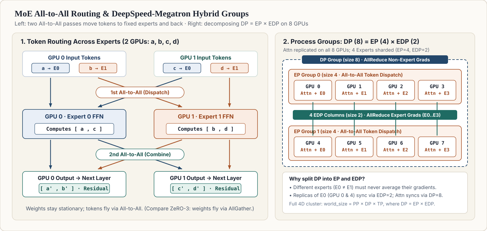

Distributed training is often taught as an isolated catalogue of acronyms—DDP, ZeRO, FSDP, TP, PP, EP—where each technique comes with its own ad-hoc diagram and rule of thumb. Viewed at a deeper level, however, every distributed LLM strategy emerges from two unified constraints: HBM capacity (Model States plus Residual Activations) and interconnect bandwidth versus latency across the cluster hierarchy.
Once you formulate tensor layouts using named mesh axes and measure communication using the cost of four collectives—AllGather, ReduceScatter, AllReduce, and All-to-All—the entire engineering stack clicks into place. Megatron-LM's ColumnParallelLinear and RowParallelLinear, FSDP's layerwise weight prefetching, GPipe's micro-batching, and DeepSpeed-MoE's token routing all become algebraic consequences of which tensor axis you cut and what the next matrix multiply or optimizer update lacks.
This monograph weaves together the geometric sharding theory from Google's JAX Scaling Book (Part 3) with the production PyTorch/CUDA internals dissected in 猛猿's eight-part 图解大模型训练 systems series (GPipe, DP/DDP, ZeRO, Megatron-LM TP & mixed precision, and DeepSpeed-Megatron MoE), alongside concrete worked examples that catch every common misconception.
Part 1: Why Single-GPU Training Breaks: Memory Accounting & Mixed Precision
Model States (16Φ) and Residual States (Activations)
DeepSpeed's ZeRO formulation partitions GPU HBM consumption into two fundamentally different categories: Model States, whose footprint scales solely with parameter count $\Phi$, and Residual States, whose footprint explodes with sequence length, batch size, and allocator lifetime.
1. Model States ($16\Phi$ or $18\Phi$ bytes). Standard mixed-precision Adam training keeps forward/backward weights in 16-bit floating point (FP16 or BF16) to saturate Tensor Cores while storing FP32 optimizer states so tiny gradient updates $\Delta W = -\eta \cdot \hat{m}_t / (\sqrt{\hat{v}_t} + \epsilon)$ do not vanish under 16-bit rounding:
| Memory Component | Precision | Bytes / Param | 7B Model | 70B Model | 175B Model |
|---|---|---|---|---|---|
| Compute Weights (Fwd / Bwd) | BF16 / FP16 | $2\Phi$ | 14 GB | 140 GB | 350 GB |
| Gradients | BF16 / FP16 (or FP32) | $2\Phi$ (or $4\Phi$) | 14 GB | 140 GB | 350 GB |
| FP32 Master Weights | FP32 | $4\Phi$ | 28 GB | 280 GB | 700 GB |
| Adam First Moment ($m$) | FP32 | $4\Phi$ | 28 GB | 280 GB | 700 GB |
| Adam Second Moment ($v$) | FP32 | $4\Phi$ | 28 GB | 280 GB | 700 GB |
| Total Static Model State | Mixed (FP16 + FP32 OS) | $16\Phi$ ($18\Phi$ if FP32 grad) | 112 GB | 1.12 TB | 2.80 TB |
Even a 7B model's static state ($112\text{ GB}$, rising to $126\text{ GB}$ with FP32 main gradient accumulation buffers) exceeds a single 80 GB H100 before a single token passes forward.
2. Residual States. Everything else occupying HBM falls into three buckets identified in 猛猿's ZeRO analysis:
- Activations: Intermediate tensors saved during forward pass for chain-rule derivatives in backward pass. Following Megatron-LM / Korthikanti et al., for a standard Transformer layer with sequence length $s$, micro-batch size $b$, hidden dimension $h$, and $a$ attention heads (without activation checkpointing), stored activation bytes per layer scale as: $$\text{Mem}_{\text{act/layer}} = s b h \left(34 + \frac{5 a s}{h}\right) \text{ bytes}$$ Plug in a 70B-class configuration ($h = 8192, a = 64, L = 80$) with just $b = 1$ and $s = 4096$: $\frac{5 a s}{h} = \frac{5 \cdot 64 \cdot 4096}{8192} = 160$, yielding $80 \times 4096 \times 8192 \times 194 \approx \mathbf{521\text{ GB}}$ of activations—more than $3.7\times$ the weight memory itself.
- Temporary Buffers: Flat pinned/device buffers allocated during collective communication (e.g., gradient buckets or layer cast buffers).
- Memory Fragmentation: Unusable gaps left in PyTorch's
CachingAllocatorwhen long-lived checkpointed activations interleave with short-lived temporary tensors.
Distributed Mixed Precision in Megatron-LM Source Code
In naive single-GPU PyTorch AMP, you wrap steps in GradScaler. In 猛猿's Megatron Source Code 3: Distributed Mixed-Precision Training, Megatron-LM takes tighter control via Float16OptimizerWithFloat16Params and contiguous gradient memory pools because half-precision underflow and multi-rank infinities must stay strictly synchronized across TP, PP, and DP replicas.
Compare IEEE FP16 ($1\text{ sign} + 5\text{ exponent} + 10\text{ mantissa}$, representable magnitude $\approx [5.96 \times 10^{-8}, 65504]$ with normal precision above $6.1 \times 10^{-5}$) against BF16 ($1\text{ sign} + 8\text{ exponent} + 7\text{ mantissa}$, matching FP32's dynamic range $\approx [10^{-38}, 3.4 \times 10^{38}]$). While BF16 avoids loss scaling altogether, its coarse 7-bit mantissa (~2 decimal digits) causes weights $|W| \approx 1.0$ to swallow tiny updates $|\eta \nabla W| \approx 10^{-4}$ without updating—so both FP16 and BF16 training retain an FP32 master parameter copy inside the optimizer.
Inside Megatron-LM's training loop, each iteration executes six deterministic systems steps:
- Loss Scaling (FP16 only): Before backward,
DynamicLossScalermultiplies the scalar loss by $S = 2^k$ (starting large, e.g., $2^{32}$) so sub-normal gradients lift safely into FP16 normal range. - Contiguous
main_gradBuffer: Instead of letting PyTorch allocate hundreds of tinyparam.gradtensors scattered through HBM, Megatron pre-allocates one flat contiguousFP32(orBF16) tensor per DP bucket, assigning eachparam.main_gradas a lightweight tensor view into that slice. Backward hooks accumulate micro-batch gradients directly in-place with zero fragmentation, enabling single-launch NCCL collectives. - Gradient Sync & Unscaling: Across DP ranks, gradients synchronize via
AllReduce(orReduceScatterinDistributedOptimizer), then divide by $S \cdot \text{world\_dp}$. - Distributed Inf/NaN Consensus Check: A rank-local overflow on shard $i$ cannot cause rank $i$ to skip the Adam step while rank $j$ applies it—that would desynchronize TP/PP weights permanently! Megatron tracks
found_infper rank and runs anAllReduce(MAX)across the entire Model Parallel group ($\text{TP} \times \text{PP}$): if any rank overflows, every rank zeros gradients, shrinks $S \leftarrow S / 2$, and skips the optimizer step. Only afterhysteresisconsecutive clean steps (e.g., 1000) does $S$ double back up ($S \leftarrow 2S$). - Distributed Global Gradient Clipping (
clip_grad_norm): Megatron computes squared L2 norms locally over each rank's non-duplicatemain_grads: $$\|g\|_2 = \sqrt{\sum_{r \in \text{TP}} \sum_{s \in \text{PP}} \|g_{r, s}\|_2^2}$$ summing acrossTP(plus expert groups) andPPstages via scalarAllReduce(SUM)—carefully excluding replicated parameters such as LayerNorm acrossTPso they are counted once, never $\text{TP}$ times—and scaling gradients by $\min\!\left(1, \frac{g_{\max}}{\|g\|_2 + \epsilon}\right)$. - FP32 Update & Cast Back: Adam updates the FP32
master_weights, casts them down to the FP16/BF16 compute model weights in one kernel, and proceeds to the next step.
Part 2: The Mathematical Language of Sharding, Collectives, and Roofline Costs
Named-Axis Mesh Notation & Worked 32-GPU Shard Math
When scaling to hundreds or thousands of accelerators, English descriptions of tensor slicing quickly break down. The JAX Scaling Book formalizes distributed tensor layout with two constructs: a logical Device Mesh assigning names to physical grid dimensions (e.g., $\text{Mesh}(\{X: 8, Y: 4\})$ for 32 accelerators), and a Sharding attaching mesh axis subscripts directly to tensor dimension names:
- Fully Replicated ($A[I, J]$): No mesh subscripts appear; every device stores a complete copy of $A$.
- 1D Axis Shard ($A[I_X, J]$): Dimension $I$ is evenly partitioned across mesh axis $X$, while dimension $J$ is unsharded. Because mesh axis $Y$ is absent from every subscript, all slices along $X$ are implicitly replicated across every rank on $Y$.
- 2D Orthogonal Shard ($A[I_X, J_Y]$): Local per-device shape shrinks to $\left(\frac{|I|}{|X|}, \frac{|J|}{|Y|}\right)$, reducing HBM footprint by $|X| \cdot |Y|$ with zero redundancy.
- Flattened Multi-Axis Shard ($A[I_{XY}, J]$): Treats axes $X$ and $Y$ as a single flattened $|X| \cdot |Y|$-way partition along dimension $I$ (order determines row-major vs. column-major device traversal).
- Forbidden Sharding ($A[I_X, J_X]$): Once mesh axis $X$ shards dimension $I$, axis $X$ is "spent" and cannot shard dimension $J$ of the same tensor without leaving off-diagonal blocks orphaned.
- Unreduced Partial Sum ($C[I, K]\{U_X\}$): Every device in an $X$-group already holds shape $[I, K]$, and the true mathematical matrix equals $\sum_{x=0}^{|X|-1} C^{(x)}[I, K]$.
import jax
import jax.numpy as jnp
mesh = jax.make_mesh(axis_sizes=(8, 4), axis_names=('X', 'Y'))
P = lambda *spec: jax.NamedSharding(mesh, jax.sharding.PartitionSpec(*spec))
# Global logical shape [2048, 8192] in BF16; E sharded on Y (4-way), F replicated
A = jnp.zeros((2048, 8192), dtype=jnp.bfloat16, device=P('Y', None))
# A.shape == (2048, 8192), while each local shard holds (512, 8192) -> 8 MiBWorked 32-GPU Mesh Check ($A[E_Y, F]$ on $\text{Mesh}(X=8, Y=4)$). Suppose $E = 2048$, $F = 8192$, and dtype is BF16 (2 bytes/element). A very natural first intuition asks: there are $8 \times 4 = 32$ GPUs, so why does each card hold $512 \times 8192 \times 2\text{ B} = 8\text{ MiB}$ instead of $\frac{2048}{32} \times 8192 \times 2\text{ B} = 64 \times 8192 \times 2\text{ B} = 1\text{ MiB}$?
The answer sits inside the single subscript $E_Y$: dimension $E$ is cut only along mesh axis $Y$, which has size $4$, yielding $2048 / 4 = 512$ rows per GPU. Because mesh axis $X$ is omitted from the subscript, the 32 cards organize into $8$ independent groups along $X$, and every group stores an identical copy of the 4 shards:
| Replica Group ($X$) | $Y = 0$ | $Y = 1$ | $Y = 2$ | $Y = 3$ |
|---|---|---|---|---|
| $X = 0$ | Rows $0\text{–}511$ | Rows $512\text{–}1023$ | Rows $1024\text{–}1535$ | Rows $1536\text{–}2047$ |
| $X = 1$ | Rows $0\text{–}511$ | Rows $512\text{–}1023$ | Rows $1024\text{–}1535$ | Rows $1536\text{–}2047$ |
| $X = 2 \dots 7$ | Identical $0\text{–}511$ | Identical $512\text{–}1023$ | Identical $1024\text{–}1535$ | Identical $1536\text{–}2047$ |
Each card therefore holds $512 \times 8192 \times 2\text{ B} = 8,388,608\text{ B} = \mathbf{8\text{ MiB}}$. You can sanity-check your $64$-row hypothesis in reverse: an AllGather_Y communicates only within a 4-GPU $Y$-group. If each GPU held only $64$ rows, AllGather_Y could assemble at most $64 \times 4 = 256$ rows—missing the other $7/8$ of the matrix sitting across $X$. Had we truly wanted $64$ rows per card across all 32 cards, the notation must read $A[E_{XY}, F]$.
The Four Collectives: Definitions, Toy Vectors, and AllGather vs. All-to-All
In distributed ML, four collective primitives operate inside a mesh axis group (here All denotes every rank participating in that group, e.g., the 4 ranks sharing a fixed $X$ along $Y$). Every distinction boils down to two questions: Does data get summed elementwise? And does each rank end with the full tensor or a shard?
| Collective | Sharding Signature | Mechanics Across Ranks | Canonical Training Usage |
|---|---|---|---|
AllGather |
$[A_X, B] \to [A, B]$ | Collects every rank's shard and concatenates along the unsharded axis (removes subscript $X$) | FSDP / ZeRO-3 reconstructing full layer weights right before forward/backward matmul |
ReduceScatter |
$[A, B]\{U_X\} \to [A_X, B]$ | Sums elementwise across ranks, then scatters orthogonal shards back (removes $\{U_X\}$, adds subscript $X$) | Summing gradients so each rank retains only the $1/N$ shard belonging to its optimizer state |
AllReduce |
$[A_X, B]\{U_Y\} \to [A_X, B]$ | Sums elementwise across ranks and replicates the full result everywhere ($\equiv \text{ReduceScatter} + \text{AllGather}$) | DDP gradient sync, or merging partial dot-products in Tensor Parallelism |
All-to-All |
$[E_Y, F] \to [E, F_Y]$ | Splits each local tensor into $N$ chunks and sends chunk $j$ to rank $j$ (moves subscript from one axis to another) | MoE Dispatch/Combine moving tokens to experts, or resharding row-split to col-split |
Executing all four operations from the exact same 2-GPU initial state—$\text{GPU}_0 = [1, 2]$ and $\text{GPU}_1 = [3, 4]$—eliminates any ambiguity:
| Operation | GPU 0 Output | GPU 1 Output | Per-GPU Size Change & Intuition |
|---|---|---|---|
| Initial input | $[1, 2]$ | $[3, 4]$ | Each GPU owns half ($1\times$) |
AllGather |
$[1, 2, 3, 4]$ | $[1, 2, 3, 4]$ | Concatenation without summing ($2\times$ memory) |
ReduceScatter |
$[1 + 3] = [4]$ | $[2 + 4] = [6]$ | Elementwise sum then split ($0.5\times$ partial state) |
AllReduce |
$[4, 6]$ | $[4, 6]$ | Sum replicated everywhere ($\text{RS} + \text{AG}$) |
All-to-All |
$[1, 3]$ | $[2, 4]$ | GPU $j$ collects chunk $j$ from every rank ($1\times$ unchanged) |
Two pivotal clarifications emerge immediately from these numbers. First, is AllReduce = AllGather + Scatter? No—AllReduce = ReduceScatter + AllGather, in that exact order. Plain Scatter only deals chunks without adding them, whereas ReduceScatter performs the $1+3 = [4]$ and $2+4 = [6]$ summation while partitioning the sum; AllGather then stitches $[4, 6]$ onto both GPUs. Whenever downstream computation operates on shards (such as FSDP optimizer updates or Megatron-SP LayerNorm), stopping right after ReduceScatter cuts communication in half.
Second, why are AllGather_Y and AllToAll_Y completely different even though both perform concatenation along the row dimension? Inspect our 4-GPU $Y$-group starting from $A[E_Y, F]$, where each rank initially holds $512$ distinct rows and all $8192$ columns ($8\text{ MiB}$):
| Operation on $A[E_Y, F]$ | What Each GPU Sends | Final Shape per GPU | Per-GPU Footprint |
|---|---|---|---|
| $\text{AllGather}_Y: [E_Y, F] \to [E, F]$ | Broadcasts all 512 local rows intact to peers | $[2048, 8192]$ | $32\text{ MiB}$ ($4\times$ growth) |
| $\text{AllToAll}_Y: [E_Y, F] \to [E, F_Y]$ | Slices its 8192 cols into 4 blocks of 2048; sends block $j$ to GPU $j$ | $[2048, 2048]$ | $8\text{ MiB}$ ($1\times$ invariant) |
On GPU 0 during AllToAll_Y, it collects one $512 \times 2048$ block (the first 2048 columns) from each of the 4 ranks and concatenates them along rows into $[2048, 2048]$; GPU 1 builds the second 2048 columns. Thus AllGather replicates the entire matrix everywhere, while All-to-All swaps which axis is sharded at constant per-device memory.
Decision Heuristic: Always ask what the next computation lacks.
- Each GPU owns a disjoint slice and the next op needs the full tensor $\implies$
AllGather. - Each GPU holds a full-shaped partial sum $\{U_X\}$ and the next op needs the full sum $\implies$
AllReduce. - Each GPU holds a full-shaped partial sum $\{U_X\}$ and the next op wants only a $1/N$ shard $\implies$
ReduceScatter. - Each GPU owns rows (or local batches) and the next op needs columns (or remote experts) $\implies$
All-to-All.
![Left: same [1,2] and [3,4] shards on two GPUs evaluated under AllGather, ReduceScatter, AllReduce, and All-to-All, highlighting AllReduce = ReduceScatter + AllGather. Right: 4-GPU Y-group from Mesh(X=8, Y=4) comparing AllGather_Y expansion to 32 MiB against AllToAll_Y resharding at constant 8 MiB.](./fig-collectives.svg)
Ring Roofline Latency vs. Bandwidth & Kronecker Autograd Duality
How much wall-clock time do these collectives take? Following the JAX Scaling Book's ring-topology derivation, let $V$ be the total unsharded array size in bytes, $|X|$ the number of devices along mesh axis $X$, $W_{\text{ici}}$ the bidirectional link bandwidth per axis (e.g., NVLink or TPU ICI), and $T_{\min}$ the per-hop network latency overhead ($\approx 1\text{ }\mu\text{s}$).
1. Ring AllGather & ReduceScatter Cost. In a bidirectional ring over $|X|$ devices, each hop sends $\frac{V}{|X|}$ bytes in each direction ($\frac{2V}{|X|}$ bytes total per hop) for $\lfloor |X|/2 \rfloor \approx \frac{|X|}{2}$ hops until every shard traverses the ring. Multiplying hop time by hop count cancels $|X|$ completely in the bandwidth term, while adding multi-axis parallelism ($N_{\text{axes}}$) divides bandwidth by the number of gathered axes:
This explains a deeply counter-intuitive scaling fact: for large tensors in the bandwidth-bound regime, AllGather and ReduceScatter take $\frac{V}{W_{\text{ici}}}$ seconds regardless of how many GPUs $|X|$ sit in the ring! Only for tiny tensors (below $W_{\text{ici}} \cdot T_{\min}$, e.g., tiny sampling vectors) does hop-count latency $\frac{T_{\min} |X|}{2}$ dominate. Because AllReduce is literally $\text{ReduceScatter} + \text{AllGather}$, its bandwidth-bound cost is strictly twice as large:
(Notice in a unidirectional NCCL ring over $N$ GPUs where link bandwidth is $B_{\text{uni}}$, each phase transfers $\frac{N-1}{N} V$, recovering the classic $2 \frac{N-1}{N} \frac{V}{B_{\text{uni}}}$ formula.)
2. Why All-to-All Costs Only $\frac{1}{4}\times$ of AllGather. Unlike AllGather—which must deliver a rank's entire $\frac{V}{D}$-byte shard across all $D-1$ steps ($D$ proportional to $D \cdot D = D^2$ work)—All-to-All only sends $\frac{1}{D}$ of each shard to each destination rank! On a 4-rank unidirectional ring where GPU 0 holds $[A, B, C, D]$, block $A$ stays put, hop 1 carries $B, C, D$, hop 2 carries $C, D$, and hop 3 carries only $D$. Summing the triangular series of block hops $\sum_{k=1}^{D-1} k = \frac{D(D-1)}{2}$ yields $\mathbf{\frac{1}{2}}$ the traffic of unidirectional AllGather. Splitting data left and right along a bidirectional ring halves maximum hop distance from $D$ to $D/2$, shrinking the triangular sum by $\mathbf{4\times}$ ($\frac{D^2}{8}$ vs. $\frac{D^2}{2}$), so on a general $N$-device mesh $(A \times B \times \dots)$:
That $4\times$ link efficiency advantage is precisely why MoE clusters can afford two All-to-All passes per layer over high-bisection fabrics.
3. The Autograd Adjoint Duality ($\text{AllGather}^\top = \text{ReduceScatter}$). Why does ZeRO-3 / FSDP do AllGather in forward and ReduceScatter in backward? Because as linear operators over $\mathbb{R}^{pn}$, broadcast and reduce are exact matrix transposes! Writing $\mathbf{u} = (1, \dots, 1)^\top \in \mathbb{R}^p$ and $\otimes$ for the Kronecker product:
By the chain rule, for any linear communication operator $y = \mathcal{A} x$, backpropagation computes $\frac{\partial \mathcal{L}}{\partial x} = \mathcal{A}^\top \frac{\partial \mathcal{L}}{\partial y}$. Hence an AllGather in the forward pass automatically differentiates into a ReduceScatter in the backward pass, and vice versa! Every backward hook in FSDP and Megatron-SP is just this Kronecker transpose identity materialized in CUDA.
The Four Sharded Matrix Multiplication Cases & Comm Overlap
Armed with cost formulas, consider multiplying any two distributed matrices $A[I, J] \cdot B[J, K] \to C[I, K]$, where $J$ is the contracting (inner summation) dimension and $I, K$ are non-contracting (outer) dimensions. Block matrix multiplication allows computing local blocks whenever shared contracting indices align; otherwise outer products sum via $A \cdot B = \sum_{i=1}^P A_{:, i} \otimes B_{i, :}$. Every possible sharding reduces to JAX Scaling Book's four canonical cases:
- Case 1 — Neither multiplicand shards the contracting dimension ($J$): $$A[I_X, J] \cdot B[J, K_Y] \to C[I_X, K_Y]$$ Zero communication! Each rank owns the entire inner vector $J$ and simply computes its independent $(I_X, K_Y)$ output tile locally. Notice how Data Parallelism ($A[B_X, D] \cdot W[D, F] \to C[B_X, F]$) and Megatron Column-Parallel Linear ($X[B, D] \cdot W[D, F_Y] \to Y[B, F_Y]$) are both immediate instances of Case 1.
-
Case 2 — One multiplicand has a sharded contracting dimension ($A[I, J_X] \cdot B[J, K]$):
Local blocks mismatch along $J$, so standard execution first gathers the sharded contracting factor (
AllGather), or—when $B$ is replicated—multiplies partial slices locally andAllReduces the output. Which strategy wins? Evaluate the exact JAX Roofline crossover on $X[B, D] \cdot W[D_X, F] \to Z[B, F]$ in BF16 (compute throughput $C$, link bandwidth $W_{\text{ici}}$):- Strategy 1 (FSDP-style
AllGather_X(W)first, then replicated matmul): $T_1 = \max\!\left(\frac{2 B D F}{C},\; \frac{2 D F}{W_{\text{ici}}}\right)$. Notice when weight communication hides behind compute: $\frac{2BDF}{C} \gt \frac{2DF}{W_{\text{ici}}} \iff B \gt \frac{C}{W_{\text{ici}}}$ (critical batch arithmetic intensity $\approx 2550$ tokens on TPU/H100 class ratios). - Strategy 2 (Split batch-free contraction: local partial product +
AllReduce_X): Flops shrink $X\times$, trading weight gather $2DF$ for output reduction $4BF$: $T_2 = \max\!\left(\frac{2 B D F}{X \cdot C},\; \frac{4 B F}{W_{\text{ici}}}\right)$.
- Strategy 1 (FSDP-style
- Case 3 — Both multiplicands shard the contracting dimension along the same axis: $$A[I, J_X] \cdot_{\text{LOCAL}} B[J_X, K] \to C[I, K]\{U_X\}$$ Ranks multiply matching contracting indices locally to produce unreduced partial sums $\{U_X\}$ (matching the outer-product decomposition), then finish with either $\text{AllReduce}_X \to C[I, K]$ (Megatron Row-Parallel Linear) or $\text{ReduceScatter}_{X, K} \to C[I, K_X]$ (keeping activations sharded for Sequence Parallelism / backward FSDP).
-
Case 4 — Both multiplicands shard a non-contracting dimension along the same axis ($A[I_X, J] \cdot B[J, K_X]$):
Invalid directly, because rank $i$ only has access to rows $I_i$ and columns $K_i$, computing only the block diagonal $(i, i)$ of $C[I, K]$ and missing all cross-blocks $(i, j)$. You must
AllGather_Xwhichever factor ($A$ or $B$) is smaller or matches downstream layout requirements before multiplying.
Collective Matmul Overlap: For Case 1+AllGather and Case 3+ReduceScatter, you do not wait idly for an entire collective before starting Tensor Core MMA instructions. Tiling the output or contracting axis into $K$ ring chunks turns the collective into a Collective Matmul pipeline: while chunk $k$ rides across the NVLink/ICI ring, the local systolic/Tensor Core unit simultaneously multiplies chunk $k-1$, hiding communication latency behind compute arithmetic.
Part 3: Data Parallelism: From DP & DDP Internals to ZeRO & FSDP
DP Bottlenecks vs. DDP Reducer, Grad Hooks, and Bucketing
Pure Data Parallelism corresponds directly to Case 1: $X[B_{\text{DP}}, D] \cdot W[D, F] \to Y[B_{\text{DP}}, F]$ runs forward with zero communication, while backward triggers Case 3 on the weights' gradient because $dW = X[B_{\text{DP}}, D]^\top \cdot_{\text{LOCAL}} dY[B_{\text{DP}}, F] \to dW[D, F]\{U_{\text{DP}}\}$ contracts over the sharded batch axis!
In 猛猿's Data Parallelism Part 1, PyTorch's evolution from DataParallel (DP) to DistributedDataParallel (DDP) illustrates why communication structure dictates scaling:
- Legacy Single-Process DP (4-step bottleneck): Runs inside a single Python process with multi-threading (bound by the Python GIL). Every iteration,
GPU 0(1) broadcasts parameters to worker cards, (2) scatters input chunks, (3) gathers all per-GPU logits back ontoGPU 0to evaluate loss, creating a severe HBM asymmetry on rank 0, and (4) gathers gradients back ontoGPU 0for the optimizer step. - Multi-Process DDP Engine (
Reducer, Autograd Hooks, & Buckets): Spawns one independent OS process per GPU (eliminating GIL contention) and embeds a C++Reducerthat attachesautogradbackward hooks to every trainable parameter. Before training starts, DDP partitions parameters in reverse topological order (last layer to first layer) into fixed-size contiguous Buckets (typically $\sim 25\text{ MB}$). Because backpropagation proceeds from the last layer toward the first, Bucket 0 finishes first; as soon as the final tensor inside a bucket sets its ready bit,Reducerlaunches an asynchronous NCCL RingAllReduceon that bucket while earlier layers continue computing backward matrix multiplies!
For a model of $\Psi$ total gradient bytes across $N$ DDP ranks, Ring AllReduce executes ReduceScatter followed by AllGather, transferring $\text{Vol}_{\text{DDP}} = 2 \frac{N-1}{N} \Psi \approx \mathbf{2\Psi}$ bytes per GPU per step—constant regardless of cluster size $N$.
ZeRO-1 / 2 / 3, PyTorch FSDP, and ZeRO-R Residual Optimizations
DDP synchronizes weights effortlessly yet squanders $O(N)$ HBM: every one of the $N$ ranks holds an identical $16\Phi$-byte Model State and executes the exact same Adam arithmetic redundantly. DeepSpeed's ZeRO (猛猿's Data Parallelism Part 2) and PyTorch FSDP partition Model States ($P_{os}, P_g, P_p$) across $N$ data-parallel ranks and—under ZeRO-R—aggressively tame Residual States ($P_a, C_B, M_D$) too.
Contrast DDP vs. ZeRO-3 / FSDP using the same 2-GPU numerical gradients $g_0 = [1, 2]$ (GPU 0) and $g_1 = [3, 4]$ (GPU 1) whose true global sum is $[4, 6]$:
- In DDP, both GPUs keep full weights $W$ and full Adam states permanently; backward calls
AllReduce(g)so both hold $[4, 6]$ and execute identical full-model Adam updates. - In ZeRO-3 / FSDP, GPU 0 permanently stores only shard $W_0$ and Adam slice $\text{OS}_0$, while GPU 1 stores $W_1$ and $\text{OS}_1$. Immediately before layer $l$ computes forward (or backward), both ranks call
AllGather(W)(JAX Case 2 Strategy 1) to materialize full $W$ transiently, compute local gradients $g_0 = [1, 2]$ and $g_1 = [3, 4]$, and immediately drop remote weight shards. Rather thanAllReduce, backward callsReduceScatter(g)(matching the Kronecker adjoint $\text{AllGather}^\top = \text{ReduceScatter}$!): GPU 0 receives only $[4]$ to update $W_0$ via $\text{OS}_0$, and GPU 1 receives only $[6]$ to update $W_1$ via $\text{OS}_1$.
| ZeRO Stage | Partitioned States | Static HBM / GPU ($16\Phi$) | $N = 8$ ($\text{compression}$) | Comm Volume / Step ($\Psi$ param bytes) |
|---|---|---|---|---|
| DDP (Baseline) | None | $16\Phi$ | $16.0\Phi$ ($1.0\times$) | $2\Psi$ (one AllReduce on gradients) |
| ZeRO-1 ($P_{os}$) | Optimizer States (FP32 $W, m, v$) | $4\Phi + \frac{12\Phi}{N}$ | $5.50\Phi$ ($2.9\times$) | $2\Psi$ (RS grads + AG updated params) |
| ZeRO-2 ($P_{os+g}$) | OS + Gradients | $2\Phi + \frac{14\Phi}{N}$ | $3.75\Phi$ ($4.3\times$) | $2\Psi$ (layerwise RS grads + AG params) |
| ZeRO-3 / FSDP ($P_{os+g+p}$) | OS + Gradients + Params | $\frac{16\Phi}{N}$ | $2.00\Phi$ ($8.0\times$) | $3\Psi$ ($1.5\times$: fwd AG + bwd AG + RS grads) |
Why do ZeRO-1 and ZeRO-2 communicate the exact same $2\Psi$ bytes as DDP? Because DDP's AllReduce already equals $\text{ReduceScatter}(1\Psi) + \text{AllGather}(1\Psi)$! ZeRO-1 and ZeRO-2 simply replace the second $1\Psi$ AllGather of gradients with a $1\Psi$ AllGather of updated parameters after each rank updates its $1/N$ Adam slice. Only ZeRO-3 adds an extra $1\Psi$ AllGather because backward recomputes layer weights on the fly—an extra $1\Psi$ cost that PyTorch FSDP hides by asynchronously prefetching layer $l+1$'s weights concurrently while computing layer $l$.
ZeRO-R (Residual State Optimizations): Even after cutting static states to $\frac{16\Phi}{N}$, activations dominate deep networks. ZeRO-R completes the HBM budget via three mechanisms highlighted in 猛猿's analysis: (1) $P_a$ (Partitioned Activation Checkpointing) shards checkpointed activations across the TP group (precursor to Megatron-SP), dividing activation footprint by $\text{TP}$; (2) $C_B$ (Constant-Size Temporary Buffers) bounds communication staging buffers regardless of layer width so giant models do not trigger transient OOM spikes; and (3) $M_D$ (Memory Defragmentation) proactively reallocates long-lived activation checkpoints into contiguous regions at run time to defeat PyTorch caching fragmentation.
![Top: 2-GPU timeline comparing DDP AllReduce on gradients g0=[1,2] and g1=[3,4] vs. ZeRO-3/FSDP transient AllGather of weights and ReduceScatter keeping [4] on GPU 0 and [6] on GPU 1. Bottom: stacked per-GPU memory bars across DDP (16.0 Phi), ZeRO-1 (5.50 Phi), ZeRO-2 (3.75 Phi), and ZeRO-3 (2.00 Phi) at N=8.](./fig-dp-fsdp.svg)
Part 4: Tensor Parallelism: Megatron-LM Architecture & Source Code
MLP, Multi-Head Attention, and Numerically Stable VocabParallelCrossEntropy
ZeRO-3 cannot reduce the peak activation footprint inside a single wide layer, nor can pure Data Parallelism scale indefinitely without swelling global batch size beyond optimization stability limits. Tensor Parallelism (TP) partitions matrix multiplications inside every Transformer block. The key insight of Megatron-LM (猛猿's Tensor Parallelism & Source Code 2) is pairing Column-Parallel (Case 1) directly into Row-Parallel (Case 3) so intermediate tensors sit completely free of synchronization across nonlinearities and attention heads.
1. Two-Layer MLP Block. Given input $X \in \mathbb{R}^{B \times S \times D}$, up-projection $A \in \mathbb{R}^{D \times F}$, and down-projection $B \in \mathbb{R}^{F \times D}$, split $A = [A_0, A_1]$ along columns and $B = \begin{bmatrix} B_0 \\ B_1 \end{bmatrix}$ along rows:
$$Y_i = \text{GeLU}(X \cdot A_i) \quad \text{(zero sync!)}, \qquad Z = \text{AllReduce}\!\left(\sum_{i} Y_i \cdot B_i\right)$$Because $\text{GeLU}(\cdot)$ is strictly elementwise, $\text{GeLU}([X A_0, X A_1]) = [\text{GeLU}(X A_0), \text{GeLU}(X A_1)]$ holds identically with zero cross-GPU communication! Multiplying $Y_i \cdot B_i$ matches JAX Case 3 ($[B, S, F_Y] \cdot_{\text{LOCAL}} [F_Y, D] \to [B, S, D]\{U_Y\}$), resolved by a single forward AllReduce.
2. Multi-Head Self-Attention (ParallelAttention). Attention heads execute independently until the final linear output projection $W^O$. Splitting $W^Q, W^K, W^V$ column-wise grants each TP rank $h / \text{TP}$ complete heads, executes local $\text{Softmax}\!\left(\frac{Q_i K_i^\top}{\sqrt{d_k}}\right) V_i$ without communication, and merges partial outputs across row-parallel $W^O = \begin{bmatrix} W^O_0 \\ W^O_1 \end{bmatrix}$ via one forward AllReduce.
3. Vocabulary Parallelism (VocabParallelEmbedding & VocabParallelCrossEntropy). With modern LLM vocabularies $V \in [32\text{k}, 128\text{k}+]$, an unsharded $[B, S, V]$ logit matrix consumes gigabytes of HBM and wastes bandwidth if gathered across GPUs for Cross-Entropy loss. Megatron solves both ends cleanly:
VocabParallelEmbeddingpartitions rows of $E[V, D]$ into $E[V_{\text{TP}}, D]$ intervals $[v_{\text{start}}, v_{\text{end}})$. Each GPU zeroes out token IDs outside its owned interval via a binary mask, embeds local matches, and runs oneAllReduce(SUM)to yield identical $[B, S, D]$ embeddings everywhere.VocabParallelCrossEntropycomputes exact cross-entropy over column-parallel logits $Z_i \in \mathbb{R}^{B \times S \times (V/\text{TP})}$ without ever executing anAllGatherover the vocabulary! Instead, it performs three lightweight $O(B \cdot S)$ scalar collectives using the log-sum-exp trick: $$\begin{aligned} m_{\text{global}} &= \text{AllReduce}_{\max}\!\left(\max_{j \in V_i} z_{i, j}\right), \qquad z'_{i,j} = z_{i, j} - m_{\text{global}} \\ S_{\text{global}} &= \text{AllReduce}_{\text{sum}}\!\left(\sum_{j \in V_i} e^{z'_{i, j}}\right), \qquad z'_{\text{target}} = \text{AllReduce}_{\text{sum}}\!\left(\mathbb{I}[y \in V_i]\, z'_{i, y}\right) \\ \mathcal{L} &= \log S_{\text{global}} - z'_{\text{target}} \end{aligned}$$ Gathering $[B, S, V]$ scalars would cost $V / 3$ times more communication bandwidth!
Adding everything up, baseline Megatron-LM executes 2 blocking AllReduces in forward and 2 in backward per Transformer layer. Megatron Sequence Parallelism (Megatron-SP) sharpens this further at zero extra communication cost: replacing AllReduce at LayerNorm/Dropout residuals with $\text{ReduceScatter}$ on entry and $\text{AllGather}$ on exit keeps LayerNorm, Dropout, and residual activations partitioned along sequence length $S$, cutting non-linear activation HBM by another $\text{TP}\times$.

Source Internals: Process Groups, Conjugate f/g, and CudaRNGStatesTracker
Dissecting Megatron-LM's mpu module (猛猿's Megatron Source Code 2) reveals three surgical engineering pieces holding 3D model parallelism together:
1. Global 3D Group Initialization (initialize_model_parallel). Given $\text{world\_size} = 16$ GPUs configured as $\text{TP} = 2, \text{PP} = 2, \text{DP} = 4$, Megatron constructs orthogonal communicators by prioritizing the fastest hardware links for TP (consecutive rank IDs inside the same physical node), then DP for mirrored stages, then PP across nodes:
- TP Groups (8 groups of 2):
[0,1], [2,3], [4,5], [6,7], [8,9], [10,11], [12,13], [14,15]— stays intra-node on NVLink. - PP Groups (8 pipelines of 2):
[0,8], [1,9], [2,10], ..., [7,15]— connects Stage 0 to Stage 1 across nodes. - DP Groups (4 groups of 4):
[0,2,4,6], [1,3,5,7](Stage 0 replicas) and[8,10,12,14], [9,11,13,15](Stage 1 replicas).
2. Conjugate Autograd Operators $f$ and $g$. Every ColumnParallelLinear enters through $f$ and every RowParallelLinear exits through $g$:
class _CopyToModelParallelRegion(torch.autograd.Function):
"""Conjugate f: Identity in forward, AllReduce(SUM) in backward."""
@staticmethod
def forward(ctx, input_):
return input_
@staticmethod
def backward(ctx, grad_output):
return _reduce(grad_output)
class _ReduceFromModelParallelRegion(torch.autograd.Function):
"""Conjugate g: AllReduce(SUM) in forward, Identity in backward."""
@staticmethod
def forward(ctx, input_):
return _reduce(input_)
@staticmethod
def backward(ctx, grad_output):
return grad_outputWhy must $f$ be a no-op in forward yet execute AllReduce in backward? During forward, replicated input $X$ feeds each column shard $Y_i = X A_i$; during backward, however, chain rule differentiates $X$ across every TP shard simultaneously: $\frac{\partial \mathcal{L}}{\partial X} = \sum_{i} \frac{\partial \mathcal{L}}{\partial Y_i} A_i^\top$, requiring AllReduce before gradients flow back to residual normalization! Notice this is the exact PyTorch manifestation of our JAX Case 1/3 symmetry.
3. Stochastic State Isolation (CudaRNGStatesTracker). Dropout inside a distributed layer creates a subtle correctness bug if seeds are not managed carefully:
- On sharded activations (or weight initialization inside
ColumnParallel/RowParallel), different TP ranks hold distinct feature slices and must use distinct RNG seeds per TP rank so dropout masks remain statistically independent across hidden units. - On replicated residual paths (Dropout right after $g$ before entering the next block), every TP rank holds identical activations $Z$ and must apply the exact same dropout mask using a shared base seed—otherwise replicas diverge immediately after step 1!
Megatron wraps both states inside get_cuda_rng_tracker().fork('model-parallel-rng'), swapping GPU RNG generator pointers cleanly on entry/exit. Because TP's 4 synchronous per-layer AllReduces block compute directly on the critical path (unlike DDP's overlapped buckets), latency explodes once cross-node NIC hops enter—which is why standard cluster topologies enforce $\text{TP} \le 8$ inside a single NVSwitch node.
Part 5: Pipeline Parallelism: GPipe Micro-Batching, Re-materialization & 1F1B
Bubble Derivation, Checkpointing Math, and Evolution to 1F1B
When a model outgrows a single 8-GPU node ($> 80\text{–}100\text{B}$ params), stretching TP across nodes over InfiniBand ruins scaling efficiency. Pipeline Parallelism (PP) solves cross-node model scaling by slicing the network vertically across layers into $P$ sequential stages—placing e.g. layers $0\text{–}7$ on Stage 0, $8\text{–}15$ on Stage 1, and communicating only thin boundary activations via point-to-point P2P send/recv.
Running an unsplit mini-batch straight down Stages $0 \to 1 \to 2 \to 3$ and back $3 \to 2 \to 1 \to 0$ keeps only 1 GPU active at any instant, producing a staggering idle fraction ("pipeline bubble") of $r_{\text{naive}} = \frac{P - 1}{P}$ (75% idle at $P = 4$). In 猛猿's Pipeline Parallelism (GPipe) analysis, GPipe cures both utilization and activation memory through three coordinated mechanisms:
- Micro-Batching & Exact Bubble Formula: Split each global mini-batch $N$ into $M$ smaller micro-batches ($F_0 \dots F_{M-1}$). Assuming uniform unit stage latency for forward and backward blocks ($t_f = t_b = 1$), each forward (or backward) sweep runs for $M + P - 1$ time slots, during which every device performs $M$ useful slots and sits idle for $P - 1$ fill/drain slots. Summing both waves ($2M$ active out of $2(M + P - 1)$ total) yields: $$r_{\text{GPipe}} = \frac{P - 1}{M + P - 1}$$ At $P = 4, M = 4$, idle bubble falls from $75\%$ to $3/7 \approx 42.9\%$; once $M \ge 4P$ ($M = 16$), bubble drops cleanly below $3/19 \approx \mathbf{15.8\%}$.
- Synchronous Optimization & BatchNorm Subtlety: Gradients from $B_{M-1} \dots B_0$ accumulate locally at each stage and update weights synchronously at the step boundary, preserving identical SGD trajectory to unpipelined training. (Note: if BatchNorm is ever present—uncommon in LayerNorm Transformers—GPipe tracks running mean/var over micro-batches instead of global batch size.)
- Re-materialization (Activation Checkpointing): Storing full intermediate layer activations for all $M$ micro-batches in flight simultaneously would blow up HBM linearly with $M$: $\mathcal{O}(N \cdot L)$ where $L$ is layers. Under GPipe's Re-materialization, each GPU retains only the $M$ micro-batch boundary inputs entering its stage during forward $F_0 \dots F_{M-1}$, discarding all internal stage activations and recomputing them on demand during backward $B_{M-1} \dots B_0$. Peak activation memory drops sharply from $\mathcal{O}(N \cdot L)$ down to: $$\text{Mem}_{\text{GPipe-recompute}} = \mathcal{O}\!\left(N + \frac{L}{P} \cdot \frac{N}{M}\right)$$ trading roughly $33\%$ extra forward compute inside each stage for an $M$-fold reduction in peak internal activation memory.
Why GPipe Evolves into 1F1B and Interleaved 1F1B: Even with checkpointing, GPipe queues all $M$ forward passes before releasing memory in any backward pass, so peak boundary activations scale as $\mathcal{O}(M)$. PipeDream-Flush (1F1B) keeps the exact same bubble ratio $\frac{P-1}{M+P-1}$, but once steady state is reached it strictly alternates 1 Forward and 1 Backward step per stage, capping maximum in-flight micro-batches at only $\mathcal{O}(P)$ stages regardless of how huge $M$ grows! Taking one step further, Megatron-LM's Interleaved 1F1B assigns each GPU $v$ non-contiguous chunks of smaller virtual stages (e.g., GPU 0 holds layers $[0\text{–}3, 16\text{–}19]$), shrinking bubble latency by $v\times$ to $\frac{P - 1}{vM + P - 1}$ in exchange for $v\times$ tiny P2P boundary transfers.

Part 6: Expert Parallelism: DeepSpeed-Megatron MoE (Principles & Source)
Sparse Routing, GShard Capacity Factor, and Load-Balancing Loss
Dense Transformers couple parameter capacity directly to inference/training FLOPs: scaling weights $10\times$ multiplies compute per token by $10\times$. Mixture-of-Experts (MoE) breaks that coupling by replacing each dense MLP layer with $E$ parallel expert FFNs while dynamically routing every token $x \in \mathbb{R}^M$ to only the highest-scoring Top-$k$ experts (e.g., $k=1$ in Switch Transformer or $k=2$ in GShard).
In 猛猿's DeepSpeed-Megatron MoE (Principle Part), translating conditional token routing onto fixed-shape high-throughput GPU kernels requires two foundational mechanisms from GShard:
- Probabilistic Top-$k$ Gating & Expert Capacity ($C$): A learned router weight $W_g \in \mathbb{R}^{M \times E}$ computes normalized dispatch probabilities $P = \text{Softmax}(x \cdot W_g)$. (In GShard's Top-2 variant, if the 2nd-best expert's probability $p_2$ is tiny, a random draw proportional to $2 p_2$ decides whether to invoke the 2nd expert or drop it gracefully.) Because GPU kernels demand statically bounded tensor shapes, each expert allocates a fixed slot capacity: $$C = \left\lceil \frac{N_{\text{tokens}} \cdot k}{E} \cdot \text{capacity\_factor} \right\rceil$$ Typically $\text{capacity\_factor} \in [1.0, 1.5]$. If routing skew pushes more than $C$ tokens toward a "popular" expert, excess tokens exceed capacity and get dropped (bypassing expert computation straight through the residual connection), while underutilized experts zero-pad unused slots.
- Auxiliary Load-Balancing Loss ($\mathcal{L}_{\text{aux}}$): Left unregularized, winner-take-all feedback collapses routing so nearly all tokens flood 1–2 experts, triggering massive token dropping and GPU stragglers. GShard/Switch add a differentiable balancing penalty across all $N_{\text{tokens}}$ in a batch: $$\mathcal{L}_{\text{aux}} = \alpha \cdot E \sum_{i=1}^{E} f_i \cdot P_i$$ where $f_i$ is the discrete fraction of tokens actually dispatched to expert $i$ and $P_i = \frac{1}{N_{\text{tokens}}} \sum_{t} p_{t, i}$ is the average router probability mass assigned to expert $i$. Because $\sum_i f_i = \sum_i P_i = 1$, Cauchy-Schwarz guarantees $\mathcal{L}_{\text{aux}}$ achieves its global minimum $\alpha$ precisely at uniform load $f_i = P_i = \frac{1}{E}$ (where factor $E$ cancels $\sum \frac{1}{E^2} = \frac{1}{E}$ to keep penalty scale invariant to total expert count!).
Two-Pass All-to-All, MOELayer Einsum Shapes, and DP = EP × EDP
Observe the beautiful symmetry between ZeRO-3 and Expert Parallelism (EP): ZeRO-3 keeps tokens pinned and moves parameters via AllGather; EP keeps giant expert parameters pinned on their host GPUs and moves tokens to experts via two All-to-All exchanges (at $1/4\times$ the ring cost of AllGather!).
Trace our 2-GPU minimal walkthrough where Expert 0 resides on GPU 0 and Expert 1 resides on GPU 1: after shared Attention, GPU 0 holds local tokens $[a, b]$ and GPU 1 holds $[c, d]$. Suppose TopKGate routes $a, c \to E_0$ and $b, d \to E_1$:
- 1st
All-to-All(Dispatch): GPU 0 keeps $a$ locally and ships $b$ to GPU 1; GPU 1 ships $c$ to GPU 0 and keeps $d$. GPU 0 executesExpert 0on $[a, c]$ while GPU 1 executesExpert 1on $[b, d]$. - 2nd
All-to-All(Combine): Computed expert outputs return to their source GPUs so GPU 0 regains $[a', b']$ and GPU 1 regains $[c', d']$ for weighted addition into the residual stream.
In 猛猿's DeepSpeed-Megatron MoE (Source Code Part), inspecting TopKGate + MOELayer shows how PyTorch translates variable token destinations into batched BLAS GEMMs via torch.einsum and autograd-compatible _AllToAll:
class _AllToAll(torch.autograd.Function):
@staticmethod
def forward(ctx, group, input):
ctx.group = group
output = torch.empty_like(input)
dist.all_to_all_single(output, input, group=group)
return output
@staticmethod
def backward(ctx, *grad_output):
# All-to-All transpose is its own adjoint! Return tokens to grads' origin
return (None, _AllToAll.apply(ctx.group, *grad_output))
# Inside MOELayer.forward(hidden_states [S, M], TopKGate outputs):
# 1. Dispatch pack: dispatch_mask[S, E, C] × input[S, M] -> [E, C, M]
dispatched = torch.einsum("sec,sm->ecm", dispatch_mask, reshaped_input)
# 2. Reshape across EP ranks: [EP, E_local, C, M] -> 1st _AllToAll swaps EP <-> tokens
dispatched = _AllToAll.apply(ep_group, dispatched)
# 3. Local Experts execute FFN in parallel on [E_local, EP * C, M]
expert_out = experts(dispatched)
# 4. 2nd _AllToAll restores token ownership -> weighted combine -> [S, M]
combined = _AllToAll.apply(ep_group, expert_out)
output = torch.einsum("sec,ecm->sm", combine_weights, combined)Crucial Engineering Detail — Decomposing $\text{DP} = \text{EP} \times \text{EDP}$: Once EP coexists with Data Parallelism, a subtle danger emerges: Attention, LayerNorm, Embeddings, and the Router are shared across every DP rank, whereas disjoint experts only replicate across $\text{DP} / \text{EP}$ ranks! DeepSpeed-Megatron splits parameter synchronization cleanly by partitioning every DP rank into two orthogonal communicators satisfying $\mathbf{\text{DP} = \text{EP} \times \text{EDP}}$:
EP Group(size $4$:{0,1,2,3}and{4,5,6,7}in an 8-GPU DP example with 4 experts): Hosts distinct experts $E_0 \dots E_3$ and executesAll-to-Alltoken Dispatch/Combine.EDP Group(Expert Data Parallel, size $\text{DP}/\text{EP} = 2$:{0,4}, {1,5}, {2,6}, {3,7}): Runs gradientAllReducestrictly across GPUs holding identical expert IDs—averaging $E_0$'s gradients with $E_1$'s would destroy specialization!- Full
DP Group(size $8$:{0..7}): Runs standard gradientAllReduceon all non-expert shared parameters (Attention, Router, Embeddings).
Inside deepspeed.moe.utils, the helper split_params_into_different_moe_groups_for_optimizer() inspects each parameter tensor, skips default full-DP reduction for MoE expert parameters (is_moe_param), and routes them to separate optimizer parameter groups tagged with the EDP process group. Combined with intra-expert TP and vertical PP, a full 4D cluster obeys $\text{world\_size} = \text{PP} \times \text{DP} \times \text{TP}$ with $\text{DP} = \text{EP} \times \text{EDP}$.


Part 7: Putting It All Together: Synthesizing a 4D Hybrid Topology
Step back and view all seven techniques through one unified matrix connecting sharded tensor axes, forward/backward collectives, byte traffic, memory savings, and hardware placement:
| Strategy | Axis Sharded | Forward Comm | Backward Comm | Comm Vol / Step | HBM Saved | Hardware Placement |
|---|---|---|---|---|---|---|
DDP |
Batch $B_{\text{DP}}$ | None | AllReduce (overlapped buckets) |
$2\Psi$ | Activations $/ \text{DP}$ | Outer IB / RoCE |
ZeRO-1 / 2 |
$B_{\text{DP}}$ + OS (+ Grads) | None | ReduceScatter grads + AllGather params |
$2\Psi$ | $4\Phi + \frac{12\Phi}{\text{DP}}$ (or $2\Phi + \frac{14\Phi}{\text{DP}}$) | Outer IB / RoCE |
ZeRO-3 / FSDP |
$B_{\text{DP}}$ + OS + G + P | AllGather(W) (prefetched) |
AllGather(W) + ReduceScatter(g) |
$3\Psi$ ($1.5\times$) | $\frac{16\Phi}{\text{DP}}$ ($8\times$ @ $N=8$) | High-BW NVLink / IB |
TP (Megatron) |
Hidden / Heads ($F_{\text{TP}}$) | $2\times$ blocking AllReduce / layer |
$2\times$ blocking AllReduce / layer |
$4 \cdot 2B S D \cdot L$ | Weights + MLP/Attn acts $/ \text{TP}$ | Intra-node NVLink ($\le 8$) |
TP + SP |
+$S_{\text{TP}}$ at LN / Dropout | AllGather + ReduceScatter |
ReduceScatter + AllGather |
Identical to TP | All layer acts $/ \text{TP}$ | Intra-node NVLink ($\le 8$) |
PP (1F1B) |
Layers vertically ($P$ stages) | P2P send/recv boundary |
P2P send/recv boundary |
Tiny ($2 B_{\mu} S D$ / stage) | Weights + OS $/ P$, acts $\mathcal{O}(P)$ | Inter-node (latency tolerant) |
EP (MoE) |
Experts ($E_{\text{EP}}$) | $2\times$ All-to-All / MoE layer |
$2\times$ All-to-All / MoE layer |
$1/4\times$ ring cost of AG |
Expert Weights + OS $/ \text{EP}$ | NVLink or full-bisection IB |
Worked 64-GPU Cluster Design (8 Nodes $\times$ 8 H100-80GB GPUs). Always allocate parallelism from the fastest hardware fabric outward:
- Dense 70B Model ($16\Phi \approx 1.12\text{ TB}$ static state): Pin $\text{TP} = 8$ (with Sequence Parallelism) inside each 8-GPU NVSwitch node so all 4 critical-path collectives per layer never touch slow inter-node NICs—leaving $140 / 8 = 17.5\text{ GB}$ of weights and cutting activations $8\times$. Remaining static state per TP group is still $1120 / 8 = 140\text{ GB}$ ($\gt 80\text{ GB}$ HBM!), so span 2 nodes with $\text{PP} = 2$ (1F1B with $M \ge 4P = 8$ micro-batches, bubble $\le 1/9 \approx 11\%$), halving static state to $70\text{ GB}$ per GPU. Finally assign the remaining $\text{DP} = 64 / (8 \times 2) = 4$ groups with
ZeRO-1(distributed optimizer): total static state per H100 drops to $\frac{2\Phi + 2\Phi}{16} + \frac{12\Phi}{64} = 17.5\text{ GB} + 13.1\text{ GB} = \mathbf{30.6\text{ GB}}$, leaving nearly $50\text{ GB}$ comfortably free for activations, KV caches, and PyTorch workspaces with zero extra DDP communication cost! - Sparse 8-Expert / 64-Expert MoE on the Same 64 GPUs: Set $\text{TP} = 4$ (inside nodes), $\text{PP} = 2$ (across nodes), giving $\text{DP} = 64 / (4 \times 2) = 8$ Attention replicas. Factor $\text{DP} = \text{EP} \times \text{EDP}$ into e.g. $\text{EP} = 4, \text{EDP} = 2$: each EP group spreads experts across $4$ GPUs (shrinking expert HBM $4\times$ and running
All-to-Allacross tight peers),EDP = 2averages gradients only between mirrored expert replicas, while non-expert Attention parameters still synchronize via ZeRO-1 across all $\text{DP} = 8$ ranks.
Citation
If you reference these derivations, roofline proofs, or sharding diagrams, please cite:
Chaoran Feng (2026). "Distributed LLM Training from First Principles: Collectives, Sharding, and Parallelism". Chaoran Feng's Blog. https://www.falcary.com/blogs/distributed-training/
@article{feng2026distributed,
title = {Distributed LLM Training from First Principles: Collectives, Sharding, and Parallelism},
author = {Feng, Chaoran},
year = {2026},
month = {November},
url = {https://www.falcary.com/blogs/distributed-training/}
}References
- How to Scale Your Model, Part 3: Sharded Matrices and How to Multiply Them. Austin, Bradbury, Blake, Chou, Douglas, Frostig, Levskaya, Pope, et al., Google DeepMind, 2025.
- Megatron-LM: Training Multi-Billion Parameter Language Models Using Model Parallelism. Shoeybi et al., NVIDIA, 2019 (arXiv:1909.08053).
- Reducing Activation Recomputation in Large Transformer Models (Sequence Parallelism & Activation Formula). Korthikanti et al., NVIDIA, 2022 (arXiv:2205.05198).
- ZeRO: Memory Optimizations Toward Training Trillion Parameter Models. Rajbhandari et al., Microsoft DeepSpeed, SC 2020 (arXiv:1910.02054).
- GPipe: Efficient Training of Giant Neural Networks using Pipeline Parallelism. Huang et al., Google Brain, NeurIPS 2019 (arXiv:1811.06965).
- GShard: Scaling Giant Models with Conditional Computation and Automatic Sharding. Lepikhin et al., Google Brain, ICLR 2021 (arXiv:2006.16668).
- DeepSpeed-MoE: Advancing Mixture-of-Experts Inference and Training to Power Next-Generation AI Scale. Rajbhandari et al., ICML 2022 (arXiv:2201.05596).
- 猛猿，《图解大模型训练》系列全八篇：流水线并行（Pipeline Parallelism），以 GPipe 为例、数据并行上篇（DP、DDP 与 ZeRO）、数据并行下篇（ZeRO 零冗余优化）、张量模型并行 Megatron-LM、Megatron 源码解读 2：模型并行、Megatron 源码解读 3：分布式混合精度训练、DeepSpeed-Megatron MoE 并行训练（原理篇） 与 （源码解读篇），知乎专栏「前面de算法」。